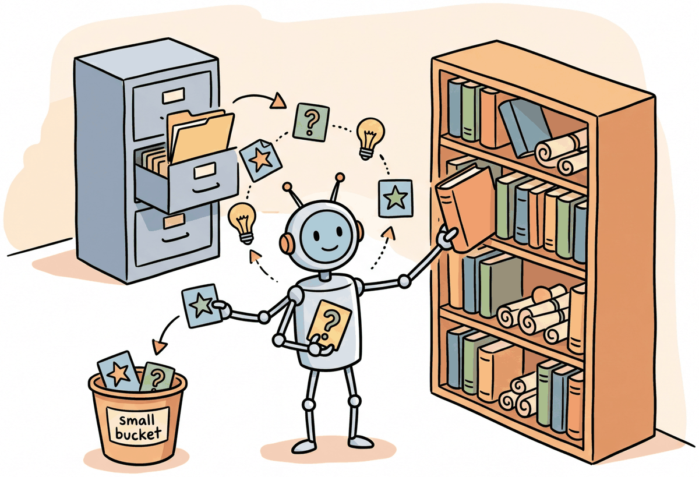
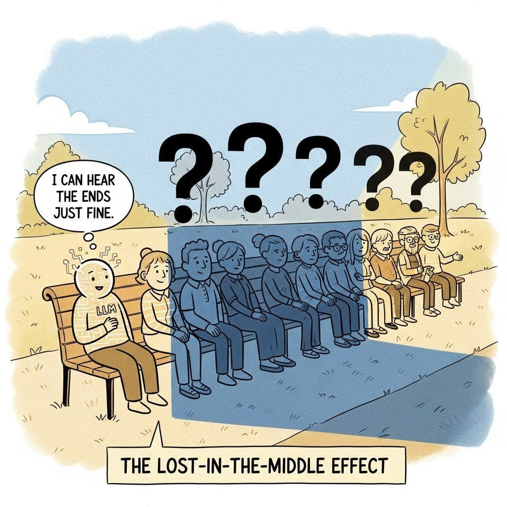

Memory is what turns a sequence of isolated exchanges into a genuine relationship.
Echo, Sentimental AI Agent
Memory is what transforms a stateless LLM into a conversational partner that remembers. Without memory, every conversation starts from zero, and the system forgets everything the user said 30 minutes ago. This section focuses on the first layer of the memory stack: short-term memory, the techniques that keep the most recent conversation turns inside a finite token budget. Building on the context window constraints discussed in Section 16.7, we cover the memory problem itself, sliding-window buffers with token-aware eviction, and progressive summarization that compresses older content without losing the gist. The next section, Section 37.5, builds on these foundations to cover long-term memory, self-managing architectures like MemGPT/Letta, and cross-session user profiles.
Prerequisites
Memory management in conversations builds on the dialogue architecture from Section 37.1 and connects to the embedding and retrieval concepts in Section 31.1. Understanding token limits and context window management from Section 11.2 is essential, as short-term memory strategies are fundamentally about managing a finite context window effectively. Vector-based memory retrieval is detailed in the next section of this chapter.

37.3.1 The Memory Problem in Conversational AI
The "lost-in-the-middle" effect (Liu et al., 2024) means attention to the middle of a long context decays sharply, so just keeping more history does not help and may hurt. The mechanism is that during pretraining, most documents are shorter than the eventual deployed context, so the model never developed strong "middle attention". Effective conversation history management therefore optimizes recency and relevance rather than coverage: a salient three-turn snippet from twenty turns ago is better than five recent turns of small talk. Summarization works because it reformats far-context as near-context. This is also why agents use scratchpads instead of long unbounded histories.
LLMs process conversations through a fixed-size context window. When the conversation history exceeds this window, older messages are dropped, taking important information with them. This fundamental limitation creates several practical problems: the system forgets what the user said earlier in a long conversation, cannot recall information from previous sessions, and cannot distinguish important details from routine exchanges.
Memory management in conversational AI addresses these problems through a layered architecture that loosely mirrors human memory. Short-term memory holds recent conversation turns in full fidelity. Long-term memory, covered in Section 37.5, stores compressed summaries, key facts, and searchable records retrievable when relevant using the techniques from Chapter 31. The challenge is deciding what to remember, how to compress it, and when to retrieve it.
Human working memory holds roughly 7 items (plus or minus 2), a number established by George Miller in 1956. A 128K-token context window holds roughly 100,000 words. Yet both humans and LLMs still forget the important thing you told them ten minutes ago.
The layered memory architecture in conversational AI directly mirrors the three-store model of human memory proposed by Atkinson and Shiffrin (1968). Their model distinguished sensory memory (milliseconds), short-term memory (seconds to minutes, limited capacity), and long-term memory (potentially unlimited, requiring encoding and retrieval). The conversational system's raw message buffer corresponds to short-term memory with its limited window; the summarized, searchable long-term store corresponds to consolidated long-term memory. The process of summarizing recent turns before evicting them from the context window is analogous to the "rehearsal" and "consolidation" processes that transfer human short-term memories into long-term storage. Even the failure modes are parallel: humans suffer from retroactive interference (new memories overwrite old ones) and retrieval failure (the memory exists but cannot be found), both of which plague LLM memory systems when summaries lose detail or vector search returns irrelevant prior context.
With models offering 128K or even 1M token context windows, a common assumption is that memory management is no longer needed: just stuff the entire conversation history into the prompt. This approach fails for three reasons. First, cost scales linearly with context length; sending 100K tokens per request is expensive at scale. Second, the lost-in-the-middle effect (covered in Section 32.1) means models pay less attention to information in the middle of long contexts, so important details from earlier in the conversation get overlooked. Third, cross-session memory requires persisting information beyond a single API call, which no context window can provide. A well-designed memory system with summarization, priority-based eviction, and vector-backed retrieval outperforms brute-force context stuffing on both cost and quality.
Start with the simplest memory strategy that meets your needs. A sliding window of the last 20 messages works for most single-session chatbots. Add summarization only when conversations regularly exceed your context window. Add long-term memory (vector-based retrieval of past sessions, covered in Section 37.5) only when cross-session personalization is a product requirement, not an assumed need.
The diagram below shows the layered memory architecture that this section and Section 37.5 implement together.
37.3.2 Sliding-Window Buffers

Short-term memory holds the most recent portion of the conversation in its original form. The simplest approach is a fixed-size buffer that keeps the last N messages. More sophisticated approaches use token-based budgeting to maximize the amount of conversation that fits within the context window.
Token-Aware Sliding Window
This snippet implements a sliding-window context manager that trims conversation history to fit within the model's token limit.
import tiktoken
from dataclasses import dataclass, field
@dataclass
class Message:
role: str
content: str
token_count: int = 0
timestamp: float = 0.0
importance: float = 1.0 # 0.0 to 1.0
class SlidingWindowMemory:
"""Token-aware sliding window that maximizes conversation retention
within a fixed token budget."""
def __init__(self, max_tokens: int = 4000, model: str = "gpt-4o"):
self.max_tokens = max_tokens
self.encoder = tiktoken.encoding_for_model(model)
self.messages: list[Message] = []
self.total_tokens = 0
def add_message(self, role: str, content: str,
importance: float = 1.0) -> None:
"""Add a message and evict oldest messages if over budget."""
import time
token_count = len(self.encoder.encode(content))
msg = Message(
role=role, content=content,
token_count=token_count,
timestamp=time.time(),
importance=importance
)
self.messages.append(msg)
self.total_tokens += token_count
# Evict oldest messages until within budget
while self.total_tokens > self.max_tokens and len(self.messages) > 1:
removed = self.messages.pop(0)
self.total_tokens -= removed.token_count
def get_context(self) -> list[dict]:
"""Return messages formatted for the LLM API."""
return [
{"role": m.role, "content": m.content}
for m in self.messages
]
def get_token_usage(self) -> dict:
"""Report current memory utilization."""
return {
"used_tokens": self.total_tokens,
"max_tokens": self.max_tokens,
"utilization": self.total_tokens / self.max_tokens,
"message_count": len(self.messages)
}
# Usage
memory = SlidingWindowMemory(max_tokens=4000)
memory.add_message("user", "Hi, I'm looking for a new laptop.")
memory.add_message("assistant", "I'd be happy to help! What will you primarily use it for?")
memory.add_message("user", "Mostly software development and occasional video editing.")
print(memory.get_token_usage())
37.3.3 Progressive Summarization
When conversations grow beyond what the sliding window can hold, summarization compresses older portions of the conversation into shorter representations. The key design decision is when to summarize and how to balance compression (saving tokens) against information retention (keeping important details).
Progressive Summarization
Progressive summarization works by maintaining multiple levels of compression. Recent messages are kept in full. Slightly older messages are summarized into a paragraph. Much older content is compressed into a single sentence or key-value pair. This approach preserves detail where it matters most (recent context) while retaining the gist of earlier exchanges.
from openai import OpenAI
client = OpenAI()
class ProgressiveSummarizationMemory:
"""Memory system with progressive summarization layers."""
def __init__(self, full_window: int = 10, summary_trigger: int = 8):
self.full_messages: list[dict] = [] # Recent, full fidelity
self.summaries: list[str] = [] # Compressed older content
self.key_facts: list[str] = [] # Extracted important facts
self.full_window = full_window
self.summary_trigger = summary_trigger
def add_turn(self, user_msg: str, assistant_msg: str) -> None:
"""Add a conversation turn, triggering summarization if needed."""
self.full_messages.append({"role": "user", "content": user_msg})
self.full_messages.append(
{"role": "assistant", "content": assistant_msg}
)
# Trigger summarization when buffer is full
if len(self.full_messages) >= self.full_window * 2:
self._summarize_oldest()
def _summarize_oldest(self) -> None:
"""Summarize the oldest messages and move to summary tier."""
# Take the oldest half of messages
to_summarize = self.full_messages[:self.summary_trigger * 2]
self.full_messages = self.full_messages[self.summary_trigger * 2:]
# Format for summarization
conversation_text = "\n".join(
f"{m['role'].title()}: {m['content']}"
for m in to_summarize
)
# Generate summary
response = client.chat.completions.create(
model="gpt-4o-mini",
messages=[{
"role": "user",
"content": (
"Summarize this conversation segment in 2-3 sentences. "
"Preserve: user preferences, decisions made, "
"unresolved questions, and key facts.\n\n"
f"{conversation_text}"
)
}],
temperature=0.3,
max_tokens=200
)
summary = response.choices[0].message.content
self.summaries.append(summary)
# Extract key facts
self._extract_facts(conversation_text)
# Compress old summaries if they accumulate
if len(self.summaries) > 5:
self._compress_summaries()
def _extract_facts(self, text: str) -> None:
"""Extract durable facts from conversation text."""
response = client.chat.completions.create(
model="gpt-4o-mini",
messages=[{
"role": "user",
"content": (
"Extract key facts from this conversation that should "
"be remembered long-term. Return as a bullet list. "
"Focus on: user preferences, personal details, "
"decisions, and important context.\n\n" + text
)
}],
temperature=0.0,
max_tokens=200
)
facts = response.choices[0].message.content.strip().split("\n")
self.key_facts.extend(
f.strip("- ").strip() for f in facts if f.strip()
)
def _compress_summaries(self) -> None:
"""Merge multiple summaries into a single compressed summary."""
all_summaries = "\n".join(self.summaries)
response = client.chat.completions.create(
model="gpt-4o-mini",
messages=[{
"role": "user",
"content": (
"Merge these conversation summaries into a single "
"concise paragraph. Keep the most important details.\n\n"
+ all_summaries
)
}],
temperature=0.3,
max_tokens=200
)
self.summaries = [response.choices[0].message.content]
def build_context(self, system_prompt: str) -> list[dict]:
"""Build the full context for an LLM call."""
context = [{"role": "system", "content": system_prompt}]
# Add key facts
if self.key_facts:
facts_text = "Key facts about this user:\n" + "\n".join(
f"- {f}" for f in self.key_facts[-15:]
)
context.append({"role": "system", "content": facts_text})
# Add conversation summaries
if self.summaries:
summary_text = (
"Summary of earlier conversation:\n"
+ "\n".join(self.summaries)
)
context.append({"role": "system", "content": summary_text})
# Add full recent messages
context.extend(self.full_messages)
return contextThe most common mistake in conversation summarization is treating all information equally. User preferences ("I'm vegetarian"), decisions ("Let's go with the blue one"), and unresolved questions ("I still need to figure out the budget") are far more important to preserve than routine pleasantries or repeated information. A good summarization prompt explicitly prioritizes these categories of information.
- Memory is layered: Production systems combine short-term memory (sliding window), long-term memory (summaries and vector stores), session persistence, and user profiles. Each layer serves a different purpose and operates at a different timescale. This section covers the first layer; Section 37.5 covers the rest.
- Token budgeting is essential: Every byte of memory included in the context window competes with the space available for the system prompt, retrieved knowledge, and the model's generation. Use token-aware memory management to maximize utilization without overflow.
- Summarization must be selective: Not all conversation content deserves equal preservation. Prioritize user preferences, decisions, unresolved questions, and key facts. Routine pleasantries and repeated information can be safely compressed.
- Start simple: A token-aware sliding window meets the needs of most single-session chatbots. Add progressive summarization only when conversations regularly exceed the budget, and reach for the long-term and self-managing systems in Section 37.5 only when cross-session memory becomes a product requirement.
Show Answer
Show Answer
What Comes Next
The chapter now turns to dialogue flow: Section 37.4: Multi-Turn Dialogue & Conversation Flows covers clarification, correction, topic switching, and fallback strategies. After that, Section 37.5: Long-Term Memory and Self-Managing Architectures picks up the memory thread again with vector stores, MemGPT/Letta, user profiles, memory-as-a-service platforms, consolidation, and how to evaluate memory quality at scale.
For fine-tuning techniques used to specialize conversational models, see Section 16.7. For RAG integration in conversational systems, see Section 32.1. For evaluation of conversational quality, see Section 37.5.